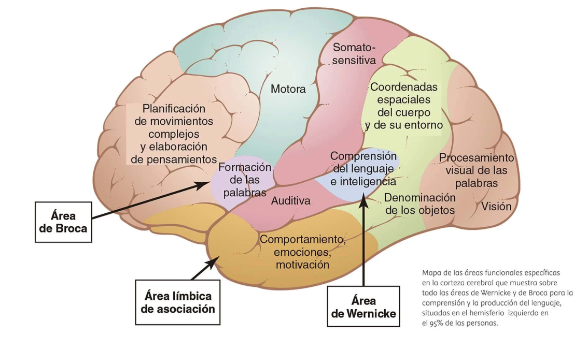

El Sistema Sanitario Espanol
Historia, estructura y administracion del sistema sanitario espanol, con foco especial en Cataluna.
La sanidad espanola no aparecio de la nada. Fue una construccion lenta donde cada epoca aporto una pieza.
Por que Alfonso XIII hace el seguro obligatorio en 1908?
Ver respuesta
Que tres organismos nacen cuando se divide el INP?
Ver respuesta
Ver
- Gobierno de Espana - Garantiza condiciones basicas en todo el territorio.
- Ministerio de Sanidad - Define como se hacen las cosas.
- La Generalitat - El tesorero del territorio.
- Departament de Salut - Los estrategas: donde poner hospitales, que enfermedades priorizar.
- CatSalut - La gestora: recibe el dinero y paga los servicios.
- SISCAT - Red de todos los centros publicos y concertados.
- ICS - La flota propia del gobierno.
- Prevencion - Que no enfermes. Vacunas, revisiones, charlas.
- Curacion - Curarte cuando estas enfermo.
- Rehabilitacion - Recuperarte despues. Fisioterapia.
- Paliacion - Aliviar el sufrimiento cuando no hay cura.
- Ordenar - El mapa y las reglas.
- Planificar - El objetivo.
- Programar - El calendario y los responsables.
- Evaluar - Si ha funcionado bien.
- Inspeccionar - Que sea seguro y legal.
- Nivel 1 - Basico - Necesidades habituales, sin especializacion. Ej: Viladecans.
- Nivel 2 - Referencia - Casi todo excepto alta tecnologia. Ej: Arnau de Vilanova, Joan XXIII, Trueta.
- Nivel 3 - Alta tecnologia - Maxima especializacion. Ej: Vall d'Hebron, Bellvitge, Germans Trias i Pujol.
- Generales - Cualquier enfermedad. Urgencias, cirugia, medicina interna.
- Pediatricos - Solo ninos y adolescentes (0-18 anos).
- Psiquiatricos - Trastornos mentales y salud emocional.
- Militares - Para soldados, veteranos y familias.
- Universitarios - Asistencia + formacion + investigacion.
- Hospital de dia - Tratamientos sin ingreso.
- Modulares - Estructuras prefabricadas.
- De campana - Temporales para situaciones extraordinarias.
- Recibir al paciente y avisar
- Atender llamadas y correos
- Gestionar citas y cancelaciones
- Crear fichas medicas
- Cobrar pagos y gestionar facturas
- Resolver quejas
- Tareas administrativas y contabilidad
- Registrar informacion del paciente
- Responder llamadas
- Informar sobre actividades del hospital
- Mantener orden en sala de espera
- Tareas administrativas
- Informar de citas al paciente
- Ser informado de los procedimientos
- Intimidad y no discriminacion
- Ser tratado con respeto
- Contacto con familia y amigos
- Secreto profesional de sus datos
- Reclamar y sugerir
- Morir con dignidad
- Segunda opinion medica
- Respetar instalaciones y personal
- Avisar si no asiste a citas
- Cumplir normas del centro
- Facilitar historial medico
- Facilitar su asistencia y tratamiento
- Trabajar con seguridad
- Recibir herramientas necesarias
- Buen clima laboral
- Horario con descanso
- Sueldo y contrato
- Formacion continuada
- Informar debidamente al paciente
- Respetar la intimidad ajena
- Ofrecer atencion de calidad
- Actuar con etica profesional
- Completar la documentacion
- Mantener el secreto profesional
El Cuerpo Humano y su Anatomia
Tejidos, organos, sistemas y aparatos. El recorrido por los grandes sistemas del cuerpo humano.
- Tejido - Conjunto de celulas similares con funcion comun. El ladrillo basico.
- Organo - Tejidos con una funcion especifica. El pulmon y el higado usan tejidos similares pero hacen cosas distintas.
- Sistema - Organos del mismo tipo de tejido dominante. Ej: sistema oseo.
- Aparato - Organos de tejidos distintos aliados para una gran funcion. Ej: sistema oseo + muscular = Aparato Locomotor.
Recubre superficies y conductos. Protege, absorbe y secreta. Produce queratina.
Celulas que se contraen y relajan para generar movimientos voluntarios e involuntarios.
Red especializada que recoge estimulos, procesa y transmite senales electricas.
Sostiene, une, protege a otros organos. Subtipos: laxo (relleno), cartilaginoso (orejas), oseo (huesos), sanguineo (sangre).
- Sosten - Estructura sobre la que se asientan todos los tejidos.
- Proteccion - Protege los organos vitales de golpes e impactos.
- Reserva energetica - La medula osea amarilla almacena grasa.
- Creacion de celulas sanguineas - La medula osea roja genera globulos rojos, blancos y plaquetas.
- Equilibrio mineral - Almacena calcio y fosforo.
Protege el cerebro
Corazon y pulmones
S. reproductor y digestivo


- Plano Sagital (izq/der) - Flexion (doblar) y Extension (estirar)
- Plano Frontal (delante/detras) - Abduccion (alejar) - Aduccion (acercar) - Lateralizaciones
- Plano Transversal (sup/inf) - Rotaciones
Ver
Ver
Ver

- 1 Frontal
- 2 Parietales (I y D)
- 2 Temporales (I y D)
- 1 Occipital
- 1 Esfenoides
- 1 Etmoides

- 2 Palatinos - 1 Vomer
- 2 Lagrimales (unguis)
- 2 Nasales - 2 Cornetes inferiores
- 2 Maxilares superiores
- 1 Mandibula (maxilar inferior)
- 2 Zigomaticos (Malar)

- Frontal - Esfenoides - Etmoides
- Maxilar - Zigomatico
- Lagrimal - Palatino
- Yunque
- Martillo
- Estribo
- Aligerar el peso del craneo
- Calentar y humedecer el aire
- Producir moco protector
- Resonancia para la voz


- Apofisis espinosa - Lo que notas al tocar la espalda
- Agujero raquideo - Canal por donde pasa la medula espinal
- Cuerpo vertebral - La parte maciza que soporta el peso

El Atlas (C1) es el nexo entre craneo y columna. Recibe el nombre del titan griego condenado a cargar la boveda celeste. El Axis (C2) permite los movimientos rotacionales de la cabeza.

- Boca - 32 dientes: 8 incisivos (cortan), 4 caninos (desgarran), 8 premolares (trituran), 12 molares (trituran).
- Faringe - Primer tubo del tracto. Con sistema de lubricacion propio.
- Esofago - ~25 cm. Transporta el bolo al estomago mediante movimientos peristalticos controlados por el plexo de Auerbach.
- Estomago - Almacena, mezcla y descompone. Contiene acido clorhidrico protegido por mucosa. El esfinter Cardias evita el reflujo. Partes: Fundus - Cuerpo - Antrax.
- Intestino delgado - Absorbe la mayoria de nutrientes. Duodeno (mezcla con bilis y enzimas) - Yeyuno (absorbe nutrientes) - Ileon (conecta con el grueso).
- Intestino grueso (colon) - Absorbe agua y electrolitos, forma las heces. Porciones ascendente, transversal y descendente.
- Recto + Ampolla rectal - Almacenamiento temporal antes de la expulsion.

- Masetero - Cierra la boca (eleva la mandibula)
- Temporal - Eleva y retrae la mandibula
- Pterigoideo medial - Eleva y lateraliza la mandibula
- Pterigoideo lateral - Abre y protuye la mandibula
- Buccinador - Empuja la comida hacia los dientes
- Orbicular de los labios - Cierra la boca al masticar

- Higado - Produce bilis para digerir los lipidos. La digestion de grasas empieza en el duodeno.
- Pancreas - Enzimas: lipasa (grasas) - proteasa (proteinas) - amilasa (hidratos de carbono).
- Microbiota - Bacterias que descomponen alimentos, sintetizan vitaminas y protegen contra microbios nocivos.
Pon en orden: Ileon - Esofago - Duodeno - Boca - Colon - Recto - Estomago - Yeyuno
Ver


- Tronco encefalico - Mesencefalo + Protuberancia + Bulbo Raquideos. Supervivencia automatica.
- Cerebelo - Coordinacion, equilibrio, aprendizaje motor y estabilizacion emocional.
- Cerebro - Diencefalo + Telencefalo. El CEO. Pensamiento, memoria y conciencia.
- Mesencefalo - La estructura mas antigua. Reacciones reflejas ante estimulos visuales o auditivos subitos.
- Protuberancia (puente) - Nodo de comunicacion entre cerebro y cerebelo. Activa la Fase REM del sueno.
- Bulbo raquideos - El agente 24/7. Mantiene activos los latidos, la respiracion y la presion sanguinea. Activa tos, estornudo, hipo.
Pese a su pequeno tamano, alberga 69.000 millones de neuronas - mas de la mitad de las del cuerpo entero.
- Regulador motriz - Precision milimetrica en los movimientos.
- Sensor de estabilidad - Mantiene el equilibrio usando informacion de oidos y vista.
- Aprendizaje motor - Automatiza acciones repetidas: escribir, bicicleta, instrumento.
- Estabilizador emocional - Regula las transiciones emocionales.
- Armonizador linguistico - Sincroniza velocidad del pensamiento con la del habla.


- Lobulo Frontal - El despacho del CEO: el mas grande. Toma de decisiones y control de impulsos. Area de Broca (produce el lenguaje) y corteza premotora (planifica movimientos).
- Lobulo Parietal - El centro sensorial: dolor, temperatura, posicion y tacto. Areas de Brodmann: Area 3 (sensor de contacto), Area 1 (textura), Area 2 (forma y tamano).
- Lobulo Temporal - El archivo central: memoria, audicion y reconocimiento de rostros. Area de Wernicke (comprende el lenguaje escrito y hablado).
- Lobulo Occipital - El kinepolis craneal: construye la imagen visual. Los ojos son solo sensores de luz. Por eso al golpearte la nuca ves estrellas.


- Sistema Limbico - Centro de emociones. Hipocampo, amigdala, talamo e hipotalamo.
- Amigdala - Genera las emociones. Marca lo que te emociona o asusta.
- Ganglios Basales - Control motor de precision. Su alteracion provoca Parkinson, Corea y Distonias.
- Cuerpo Calloso - Super cable que conecta los dos hemisferios.
- Talamo e Hipotalamo - Regulan y reenvian la informacion sensorial a la corteza (excepto el olfato).
- Hipofisis (pituitaria) - Regula crecimiento, metabolismo, reproduccion, lactancia, tiroides. Ubicada en la silla turca.
- Glandula Pineal (epifisis) - Tamano de una lenteja. Regula los ciclos circadianos.


Si alguien sufre dano en el hipocampo, que tipo de memoria se vera afectada y por que?
Ver respuesta

- Solo sienten (Sensitivos): Olfatorio (I) - Optico (II) - Vestibulococlear/oido (VIII)
- Solo mueven (Motores): Oculomotor (III) - Troclear (IV) - Abducens (VI) - Accesorio/cuello (XI) - Hipogloso/lengua (XII)
- Sienten y mueven (Mixtos): Trigemino/cara y masticacion (V) - Facial/expresiones y gusto (VII) - Glosofaringeo/garganta (IX) - Vago (X)

- Sistema Somatico (voluntario) - Los movimientos que controlas conscientemente.
- Simpatico (modo alerta) - Se activa ante el peligro. Acelera el corazon, dilata pupilas, prepara para huir.
- Parasimpatico (modo relax) - Se activa en calma. Ralentiza el corazon, mejora la digestion y el descanso.
- Estructura cilindrica protegida por las meninges y el LCR.
- Sustancia gris en forma de H en el centro. Raices anteriores = motoras (eferencias). Raices posteriores = sensitivas (aferencias).
- Corticoespinal - Movimientos voluntarios finos y precisos
- Espinotalamica - Dolor, temperatura y tacto al cerebro
- Espinocerebelosa - Posicion muscular al cerebelo (equilibrio inconsciente)
- Intersegmentarias - Reflejos rapidos (retirar la mano del fuego)
- Duramadre - La mas externa y densa. Une la medula al hueso.
- Aracnoides - La intermedia. Amortigua.
- Piamadre - La mas interna. En contacto con el tejido nervioso.
- LCR - Amortiguacion mecanica, flotabilidad del SNC, elimina residuos y transporta nutrientes.

- Soma (cuerpo celular) - Amielinico. Contiene el nucleo. Mantiene viva a la neurona y decide que hacer con la informacion.
- Dendritas - Actuan como antenas receptoras. Reciben mensajes de otras neuronas o de los sentidos.
- Axon - Envia el mensaje hacia la siguiente neurona o hacia un musculo. Muchos axones estan cubiertos de mielina (aislante que hace que el impulso viaje hasta 400 km/h).

- Tejidos - Organos - Sistemas - Aparatos: la jerarquia del cuerpo.
- El sistema oseo protege con 3 esferas: craneo, caja toracica y pelvis.
- El encefalo: tronco encefalico (supervivencia), cerebelo (coordinacion) y cerebro (pensamiento).
- Los 4 lobulos tienen funciones concretas y ubicacion estrategica.
- La informacion entra por aferencia y sale por eferencia.
Sala de juegos
Cada partida da XP y sube tu nivel. Los juegos refuerzan lo que has leido en los apuntes.